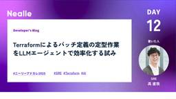
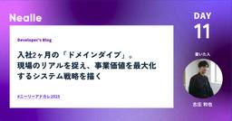
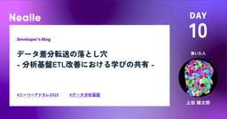
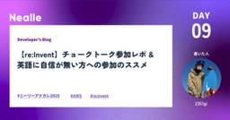

Nealle Developer's Blog
https://nealle-dev.hatenablog.com/
株式会社Nealleのエンジニアによる開発者ブログ
フィード

Terraformによるバッチ定義の定型作業をLLMエージェントで効率化する試み 12
12
Nealle Developer's Blog
こんにちは！ニーリーで SRE をしています 高 (@nogtk) です。 ニーリーでも LLM を活用した業務や開発効率の改善が日々あちこちで行われているのですが、そんな事例の1つをご紹介できればと思います。 この記事は ニーリーアドベントカレンダー 12日目です 🎉 バッチの定義方法について ニーリーでは、スケジュール実行されるバッチ処理の実行基盤として Step Functions を利用し、Step Functions から ECS タスクを呼び出す形を取っています。 そしてその sfn や ECS タスクは Terraform でコード化（IaC）されており、SRE チームによってそ…
2日前

入社2ヶ月の「ドメインダイブ」。現場のリアルを捉え、事業価値を最大化するシステム戦略を描く 19
Nealle Developer's Blog
こんにちは！ ニーリーアドベントカレンダー11日目を担当するPDBiz開発グループの古庄(@k_furusho)です。 私は10月16日にニーリーへ入社し、「PDBiz（Park Direct for Business）」開発グループにジョインしました。 このPDBiz、社内では主力事業であるPark Directに続く「第二の矢」として、強烈な事業成長が期待されているフェーズにあります。 note.nealle.com 今回は、入社から短期間で「法人車両の月極駐車場管理」というドメイン業務の解像度を一気に高め、システム戦略を描くために実践したアプローチについてお話しします。 コードの外側に広…
3日前

ETL差分転送の落とし穴 - Django ORM利用時の注意点と対策 31
Nealle Developer's Blog
この記事は ニーリーアドベントカレンダー10日目です。 こんにちは！Analyticsチームの上田です。 データ分析基盤を運用していると、「データの鮮度を上げたい」「転送コストを下げたい」という欲求は尽きないものです。ちょうど私たちもETLの改善に取り組んでいたのですが、そこには思わぬ落とし穴が潜んでいました。。🥲 今年の反省は今年のうちにということで、得た学びを共有したいと思います！🙏 3行まとめ データ転送コスト削減のため転送方式を 全件洗替え転送 → 差分転送 に切り替えたところ、転送漏れが発生 原因は、Django ORMのsave(update_fields=...) 利用時に、更新…
4日前

【re:Invent】チョークトーク参加レポ & 英語に自信が無い方への参加のススメ 20
Nealle Developer's Blog
この記事は ニーリーアドベントカレンダー 9日目です :🎉 お疲れ様です。re:Invent 2025へ参加した大木( @2357gi ) です。 今回はre:Invent 2025で行われている Chalk Talkに参加し、だいぶ衝撃的&お勧めしたいと感じたのでレポと攻略法をまとめます💪 そもそも 今年の目玉が発表されるキーノートから実際に手を動かすワークショップ、グループ対抗でスコアを競うGameDayなど、re:Inventには様々なタイプのセッションが存在します。 その中でも「チョークトーク（Chalk Talk)」という”対話型”のセッションがあるのですが、これはスピーカーがただ講…
5日前
AI巻き込み型コードレビューのススメ 34
Nealle Developer's Blog
ニーリーアドベントカレンダー 8日目を担当する増田(ますた)です。 文章力に乏しいため、AIに助けてもらいながらこの記事を書きました。 去年に続きススメシリーズです。 コードレビューで「こうした方がいい」と指摘したのに、意図が伝わらず違う方向に修正されてしまった——皆さんそんな経験はありませんか？ 本記事では、今年私の中でハマっている手法である「AI巻き込み型レビュー」を通じてこの問題を解決するアプローチを紹介します。 コードレビューにおける「伝える難しさ」 コードレビューは単なるコードのチェックではありません。「なぜこう書くべきか」という意図や背景を、レビュイーに正確に伝える必要があります。…
6日前

事業と組織の急成長を後押しするコーポレートエンジニアが実践している「ITIL4×Jira」による継続的改善
Nealle Developer's Blog
こんにちは！株式会社ニーリーでコーポレートエンジニア（以下、CE）をしている小島拓也です。この記事は ニーリーアドベントカレンダー2025 の5日目の記事です！ ニーリーは「社会のインフラ」を創るべく、駐車場オンライン契約サービス「Park Direct」を展開し、ありがたいことに事業も組織も急成長しています。そんな「Park Directを支えている人」を支え、社内のIT基盤を運用保守しているのがコーポレートエンジニアです。 この記事は、そんなコーポレートエンジニアが今年一年で取り組んだ、社内のIT基盤の課題をITIL4の考え方を取り入れ改善のサイクルを回し始めたふりかえりのお話です。 IT…
9日前
近所の美味しいラーメン屋の紹介、或いはダイナミクスで人を感動させるということ
Nealle Developer's Blog
はじめに どうも、ARCHチームの野呂です。 今日は（前回の記事の後編を書かずに！）近所の美味しいラーメン屋について書かせていただきます。 名古屋市千種区にある「太陽」というチャーシューメン専門店なんですけれども。 世間の流行とはちょっと違うのかもですが、近所の人々から愛されていて、昼過ぎにはいつも完売している感じのラーメン屋です。 別に店主から聞いたわけではないので以下の文章は半分くらい妄想＆ただの感想なんですが、しかし自分の感じている魅力を文章にしてお届けしたいと思っております。 特徴と美味しい食べ方と まず、スープがあっさりしているというところが特徴です。 それ単体で味わうと少し物足りな…
10日前
怪奇！電話番号を入力しただけで画面がクラッシュした謎バグの話
Nealle Developer's Blog
はじめに こんにちは、ARCH チームの立川です。ニーリーアドベントカレンダー2025、3番手を務めさせていただきます。 早いものでニーリーに入社してちょうど 1 年が経ちました。先日、とても稀なエラーに遭遇したので、今回はその件について書きたいと思います。 電話番号フォームを入力すると画面が真っ白になる いきなりタイトルでなんじゃそりゃとなるかと思いますが、本当にこのようなことが起きました。とある案件で全体的に様々なデバイス、ブラウザで動作確認をしていて、本当に偶々見つけたのですが、iOS Chrome ブラウザで電話番号フォームを入力していたところ、11 桁目を入力するとエラーが起きて画面…
11日前
合意形成を念頭にドキュメントを書くと仕事が捗る
Nealle Developer's Blog
ニーリーアドベントカレンダー2025、２番手を務めますプロダクトエンジニアの大友凜です。 最近、今更になってグランメゾン東京を見て「ボナペティ（召し上がれ）」と言うことにハマっています。 ただ、完全に時期を逃してしまっているため、あまりネタが人に伝わることがなくスベりまくっています。 さて本題に戻りまして、直近「ニーリーには今、エンジニアとしてのキャリアを賭ける価値がある」という強気なタイトルの記事を書くにあたり、自分の経験の棚卸しやふりかえりをしました。 その中で僕がニーリーに勤めてから「あ〜、これは上手になったな〜」「ここはエンジニアとして強くなったな〜」と感じたことが「合意形成の推進、意…
12日前
AI時代の「Embedded Documentation」のススメ
Nealle Developer's Blog
こんにちは！ ニーリーアドベントカレンダー2025 始まりました！ トップバッターを務めます、PDBiz開発Gの古庄(@k_furusho_)です。 入社して1ヶ月が経過しました。(入社エントリもきっと書く..!!) 架電業務や駐車場探しの実業務にも参加し、ニーリーの「染み出すカルチャー」を肌で感じる中で、オペレーションやシステムの解像度を一気に上げている最中です。 さて、システムの解像度を高める過程で、開発現場における永遠の課題である「ドキュメント管理」について、改めて思考を巡らせる機会がありました。 「Code is the executable design document（コードこそ…
13日前
HowからWhyへ。「もう一歩先の価値」を出すためにプロダクトエンジニアが辿り着いたこだわり
Nealle Developer's Blog
お疲れ様です！ プロダクトエンジニアの石倉です。 実は今回が初のブログ投稿となります、お手柔らかにお願いしますw はじめに 私はエンジニアとして「単に仕様通りに作る（How）だけでなく、それが本当にユーザー価値・事業価値につながるのか（What/Why）を問い続けるべきだ」というこだわりを持っています。 （AIの台頭なども含め）これからの時代、技術力だけで価値を出し続けるのは難しく、ビジネスの課題解決にどれだけ深くコミットできるかが、エンジニアの市場価値を決めると考えているからです。 しかし、ニーリーに入社した当初は、そのこだわりが空回りしていました。 「プロダクト志向」を自負していましたが、…
1ヶ月前
DevRelKaigi 2025に行ってきた話: 「内向きのDevRel」への翻訳とハック
Nealle Developer's Blog
こんにちは、ニーリーの佐古です。 現在開発速度や開発者体験の向上のため、取り組みの諸々を遂行しています。 DevRelKaigi 2025に行ってきました さて、さる10月2～4日に開催されたDevRelKaigiの3日目に参加してきました。 (一か月以上経ってしまった……) devrelkaigi.org 日本では唯一となるDevRelをテーマにしたカンファレンスです。 DevRelとは Developer Relationshipの略で、原則としてはある主体が提供するプロダクトを「利用する開発者」との関係を指し、この分野ではその維持改善への取り組みがテーマとなります。 プロダクトのユーザー…
1ヶ月前
難しいから面白い、エンジニアの成長環境 〜急成長SaaS企業で事業成長を担う高難度な開発をしませんか？〜
Nealle Developer's Blog
こんにちは。ニーリーでプロダクトエンジニアをしている西村です。 「#ニーリー開発組織の野望」第9弾では、ニーリーでプロダクトエンジニアをやる面白さについてお話しします。 単なる機能開発じゃ、もう物足りない。事業を動かすような、本質的な開発に挑戦したい — そんな思いを抱いたことはありませんか？ 複雑な要件を解きほぐし、不確定な要素と向き合いながら、事業にクリティカルなインパクトを与える。単なる機能追加ではなく、会社の成長スピードそのものを左右する開発。難しいからこそ、面白い。 そう感じるエンジニアの方に向けて、今回はニーリーにおけるこの「高難度開発」の面白さについてお話しします。 決済会計業務…
1ヶ月前
「品質」を次のレベルへ ―ニーリーが挑んだ5時間の品質ワークショップ―
Nealle Developer's Blog
こんにちは、QAチームの宮原です。 少しずつ肌寒くなってきて、もうすっかり秋ですね。 この季節は美術館や博物館に行きたくなるので、ちょくちょくホームページで企画展をチェックしています！ おすすめの美術展などがあればぜひ教えてください！ 先日、Findyさんのイベント ＃QATT番外編 秋の夜長に品質ゆるトーク交流会 にて、「品質ワークショップをやってみた」というテーマで同じQAチームの関井がLT登壇させていただきました。 今回は、そこでお話した品質ワークショップについて、より詳細なレポートをお届けしたいと思います。 当日の発表資料はこちらです。 speakerdeck.com 10月上旬、ニー…
1ヶ月前
「守りのデータ活用」から「新たな価値を創る」攻めの活用へ 〜 ニーリーAnalyticsチームの2年半の歩みと野望 〜
Nealle Developer's Blog
こんにちは！Analyticsチームの上田です。 今回は、 #ニーリー開発組織の野望 シリーズの第8弾として、Analyticsチームの野望を語りたいと思います！ さっそく野望を... と言いたいところですが、2023年5月にAnalyticsチームが始動してから2年半が経ち、チームにもデータ基盤にも大きな変化がありました。以前noteにチームの紹介記事を投稿してから1年半ということもあり、まずは野望に入る前に、それぞれの現在地を確認したいと思います。 Analyticsチームの現在地 ミッションはチーム紹介noteの時と同様、「事業や経営の意思決定を支援するデータ分析結果の創出」です。ニーリ…
1ヶ月前
マルチプロダクトの起爆剤になる。SREが仕掛ける事業成長へのレバレッジポイント
Nealle Developer's Blog
はじめに お疲れ様です！株式会社ニーリーSREの大木 ( @2357gi )です！寒くなってきましたね、スノーボードの季節です。嬉しいですね、気持ちテンション高めでやっていきます。 「#ニーリー開発組織の野望」第7弾の今回は、ニーリーの今後のプロダクト展開のためにSREチームが仕掛けようとしている取り組みを紹介し、SREが「マルチプロダクトの”起爆剤"」であり、「事業成長へのレバレッジポイント」たるぞという話ができたらなと思います。若干ビッグマウスですが、私は本気でSREが今後ニーリーの成長角度を左右すると思っています！ ワンプロダクトのSREからマルチプロダクトのSREへ 我々のメインプロダ…
1ヶ月前
次世代モビリティインフラをセキュリティの力で加速させる〜1人目プロダクトセキュリティエンジニアを募集します！〜
Nealle Developer's Blog
1人目プロダクトセキュリティエンジニアの募集を始めました こんにちは。ニーリーのプラットフォーム開発グループでマネージャーをしている菊地です。 先月「プロダクトセキュリティエンジニア」という求人をオープンしました。なるべく求人票に思いを込めたつもりなのですが、なかなか求人票のフォーマットで全てを伝えるのは難しかったので、今回 #ニーリー開発組織の野望 の第6弾として改めて詳細をお話しさせていただきます。 herp.careers 詳しくは後述するのですが、今年に入りPark Direct(パークダイレクト)というサービスが「社会インフラ」として認知していただくようになりつつあり、ニーリーとして…
2ヶ月前
マルチプロダクト黎明期！事業間のシナジー紡ぐ共通基盤アプリケーションの野望
Nealle Developer's Blog
こんにちは！株式会社ニーリーのプラットフォーム開発チームでエンジニアをしている松村です。今年はきちんと秋が来て散歩もはかどる季節となりましたね。秋刀魚も無事に食べられて喜ばしい限りです。 さて今回は「#ニーリー開発組織の野望」シリーズ第5弾、プラットフォーム開発のターンです。CTO三宅の記事にもあった通り、今のニーリーにはマルチプロダクト化の波が押し寄せています。この記事ではそんなマルチプロダクト時代の始まりにおける共通基盤アプリケーション開発が持つ魅力をお話しできればなと思います。 note.nealle.com プラットフォーム開発の黎明期からマルチプロダクト黎明期へ 思い出してみると、自…
2ヶ月前
ニーリーには今、エンジニアとしてのキャリアを賭ける価値がある 〜実際に 30 代を Bet しているプロダクトエンジニアの在籍エントリ〜
Nealle Developer's Blog
こんにちは！ニーリーでプロダクトエンジニアをしている大友凜です。 私事ですが、昨年に 30 歳を迎えました。 年齢に合わせた生活やキャリアの変化を痛感する最近です。 30 代を節目に色々と将来に考えを巡らすということは、あるあるだと思います。 僕の場合、エンジニアとしてキャリアを重ねるにあたり「20 代は元気で評価してもらえる、30代は実力で評価を勝ち得る、40代は実績で評価されるだろう」と想定して 20 代を過ごしてきました。 そのため、今、この瞬間は「30代の身の振り方を決める大事な時期」だと考えています。 そういった個人的な節目ということもあり、今回は在籍エントリを通して自分の経験の棚卸…
2ヶ月前
ドメインを解き、事業を動かす。ニーリーQAの野望
Nealle Developer's Blog
こんにちは。株式会社ニーリーでQAエンジニアをしている池端です。 普段はラーメン食べてばかりでこういう記事を書かないのですが、熱量が高いうちに書き切ろうと思います。 そんなタイミングで、「#ニーリー開発組織の野望」シリーズも第3弾に突入しています。各メンバーがそれぞれの“野望”を語る中で、今回はQAの番です。(シリーズ全体の記事は Nealle Developer's Blog からご覧いただけます！) その“野望”を語るうえで外せないのが、先日Xでも展開したQA Recruiting Deckのリニューアルです。 ニーリーのQAエンジニア向けのRecruiting Deckを大幅アップデート…
2ヶ月前
ミッションは事業成長。PdMの働き方の現在地と、その先の「全員事業家」への挑戦
Nealle Developer's Blog
こんにちは！ニーリーでプロダクトマネージャー（PdM）をしている阿部です。 先日CTOの三宅から公開された「#ニーリー開発組織の野望」シリーズ、この記事はその第2弾となります。 note.nealle.com この記事は、以下の二部構成でお話しします。 【第一部】PdMの働き方の「現在地」 【第二部】その先の「全員事業家」への挑戦 はじめに：この記事のポイント つい文章が長くなってしまい...笑 最初にこの記事のポイントをまとめます。 ニーリーのPdMは「機能開発」だけでなく「事業成長（PL/KPI）」そのものに責任を持つ 事業成長のためならプロダクトの枠を超え、マーケティング/オペレーション…
2ヶ月前
AI OCRの検証記録 ~ ニーリーでの検証結果はこうでした ~
Nealle Developer's Blog
こんにちは、プロダクトAI開発の宮後(miya10kei)です。 先日、数年遅れで初コロナにかかってしまいダウンしていました（コロナ辛いですね、、、）😷 生成AIで画像やPDFのOCR（文字認識）を試したことはあるでしょうか？ ニーリーでは事業で様々な形式の書類を扱っており、如何にしてオフラインのデータを構造化されたオンラインデータに変換するかが業務効率化の重要な要素となっています。 今回は、画像やPDFのOCRに生成AIを用い場合に、どれくらいの精度がでるかを検証した結果を紹介します！ ⚠️ 読む前の注意点 ⚠️ OCR（Optical Character Recognition/Reade…
2ヶ月前
チャットでSQL生成！データ活用チャットボットを社内公開したら結構いい感じだった
Nealle Developer's Blog
こんにちは、プロダクトAI開発の宮後(miya10kei)です。最近はMakuakeで変わったガジェットを探すのにハマっています🛠️ 昨年、ニーリーで社内AIチャットボットのPoC開発をし、今年の4月から全社で本格的な利用を開始しました。現在は知識領域毎に特化した4つのチャットボットを運用しています。 チャットボット 説明 AI Park Direct Park Directのドメイン知識を回答してくれるチャットボット AI Park Direct for Business Park Direct for Businessのドメイン知識を回答してくれるチャットボット AI 労務 労務関連の社内…
3ヶ月前
大量のコールセンター通話を生成AIで自動要約し作業時間を劇的に削減
Nealle Developer's Blog
こんにちは、プロダクトAI開発の宮後(@miya10kei)です。 最近は暑さにやられて、自宅に引きこもっている今日この頃です💦 今回はコールセンターの通話内容を通話終了後に、ニアリアルタイムで要約する仕組みを構築したので紹介します。 はじめに ニーリーでは月間数万件の通話が発生する社内コールセンターを運営しています。カスタマー（駐車場の借主様）とクライアント（不動産管理会社様）からの問い合わせに対応する中で、オペレーターの業務効率化が課題となっていました。 オペレーターは通話が終わるたびに内容をテキストでチケット管理システムに記録する必要があります。 慣れた方なら通話しながらメモを取って、電…
3ヶ月前
Findy Team+ Award 2025を受賞しました！〜導入から5ヶ月でスピート受賞した取り組みについて〜
Nealle Developer's Blog
はじめに こんにちは、プラットフォーム開発グループの菊地(@_tinoji)です。 この度、ニーリーがFindy Team+ 利用企業の中で特に開発生産性が優れた企業として「Organization Award Medium Division」を受賞いたしました。 prtimes.jp 表彰式でトロフィーを受け取るCTO三宅(写真左) ニーリーがFindy Team+を導入したのは今年の3月のため、導入から5ヶ月で表彰していただいたことになります。 まだ利用期間も短く、多くの取り組みができたわけではないのですが、これから開発生産性に力を入れていきたい企業・チームの知見となればと思い、本記事では…
3ヶ月前
Axios 1.8 から導入された allowAbsoluteUrls の使い所と注意点
Nealle Developer's Blog
はじめに こんにちは、ARCH チームの立川です。 最近、Axios のリリースノートをチェックしていて 1.8.0 で Breaking Changes が入っていたので（ただし、メジャーバージョンが上がっているわけではない）、今回はその内容について書こうと思います。具体的には、 allowAbsoluteUrls というオプションが追加されたのでそちらに関する説明となります。allowAbsoluteUrls について触れている記事が見当たらなかったので、この記事が皆様のバージョンアップ対応の一助となれば幸いです。 github.com 1.8.0 より前の仕様 allowAbsolute…
3ヶ月前
Amazon ConnectのGUI開発体験を維持しつつ、Terraformで安全にリリースするハイブリッドIaC戦略
Nealle Developer's Blog
はじめに こんにちは、SREチームの森原(@daichi_morihara)です。 今回はAmazon ConnectのIaC化および開発体験向上に関する取り組みを共有していきたいと思います。Amazon ConnectはGUIのドラッグ＆ドロップによる手作業で簡単にリソースを作成・変更できる利便性が特徴的です。その一方で本番環境でのリソース変更を手作業で行うのはオペミスのリスクが伴うため避けたいものです。 しかし通常リソースのようにAmazon Connectを完全にIaCで管理するのも、必ずしも適切ではありません。なぜならAmazon Connectの長所である直感的なGUIでのリソース作…
4ヶ月前
イベント登壇レポート ~ニーリーにおける生成AI活用の進め方と活用事例~
Nealle Developer's Blog
こんにちは。プロダクトAI開発の宮後(@miya10kei)です。 7/31に株式会社find様、株式会社ALGO ARTIS様と共催で「生成AI、実際どう？ 〜現場エンジニアたちのぶっちゃけトークミートアップ〜」というイベントを開催させていただきました。 find.connpass.com 「ニーリーにおける生成AI活用の進め方と活用事例」というタイトルで登壇しましたので、今回はその内容をスライドを抜粋しながら紹介します。 speakerdeck.com 生成AIの活用事情 これまで ニーリーで本格的に生成AIの利用を開始したのは2024年下期（7~12月）からになります。きっかけはこちらの…
4ヶ月前
Datadogのコスト最適化〜ログのコストを70%削減した話〜
Nealle Developer's Blog
はじめに こんにちは、SREチームの森原(@daichi_morihara)です。 今回はDatadogのログのコスト削減に関して最近行った取り組みを共有していきたいと思います。AWSやGCPなどのクラウドに関してはコスト削減・最適化に積極的に取り組んでいる一方で、Datadogに関してはあまりできていない、、というケースは多いのではないでしょうか？ (Datadogを使用している場合に限りますが。) 弊社でもDatadogのコスト最適化はあまり行えておらず、提供するサービスのスケールに伴ってDatadogのログコストが着々と増加してきたため、コスト削減に取り組むに至りました。 Datadog…
4ヶ月前
ゆるSRE#12 でみんなの武勇伝を聞いてきました！
Nealle Developer's Blog
yuru-sre.connpass.com お疲れ様です。SREの大木 ( @2357gi ) です。本日は 『ゆるSRE勉強会 #12 SRE乗り越え体験まつり 〜聞いてくれ俺の武勇伝〜』の参加レポです💪 ゆるSRE自体は『ゆるい雰囲気で肩肘張らずにSRE関連のトピックについて話す勉強会』と銘打っており、その通りにゆるくワイワイできるコミュニティです。 今回で12回目、そして2周年だそうです！めでたい 👏👏👏 今回の会場はLINEヤフーさんのLODGEです！ 広くてオシャレなオフィス、素敵ですね〜 フードスポンサーは株式会社スタディストさん、ドリンクスポンサーはリブセンスさんです🍻 会場スポ…
4ヶ月前